[174.85482795000001, -36.8794976]
Width 1567 m · rotation -0.0°
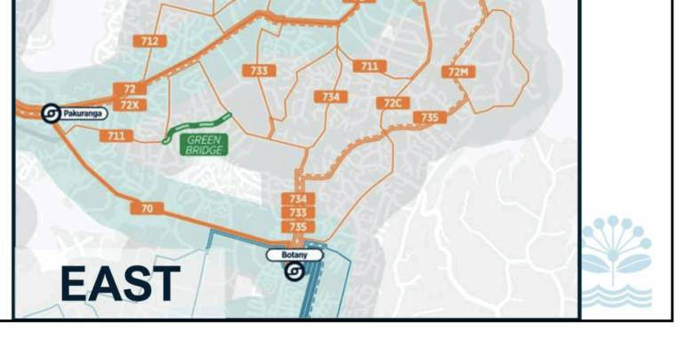
[174.904848875, -36.91581205]
Width 2668 m · rotation -7.0°
[174.74689065, -36.89580745]
Width 1735 m · rotation -0.0°
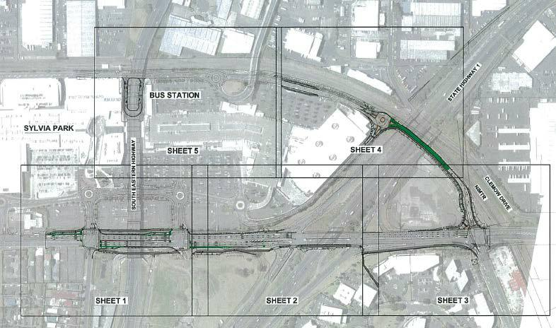
[174.8444678, -36.91762885]
Width 1171 m · rotation 79.5°
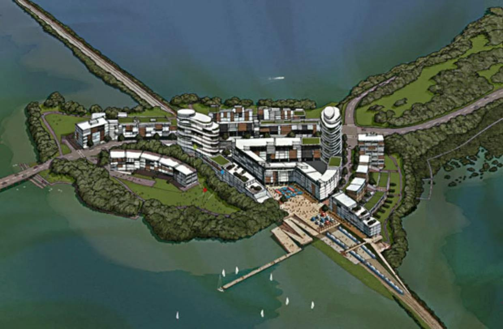
[174.81097945, -36.8640302]
Width 1426 m · rotation -0.0°
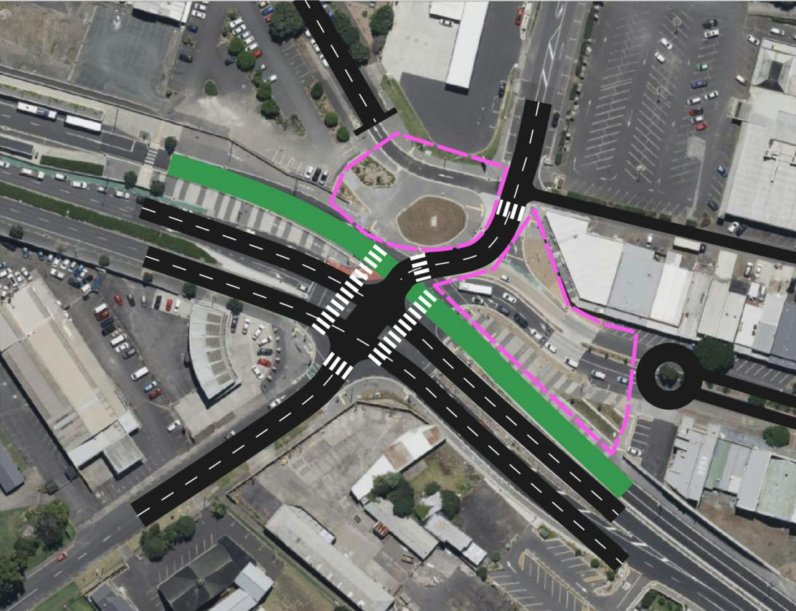
[174.85093225, -36.8998336]
Width 1766 m · rotation -0.0°
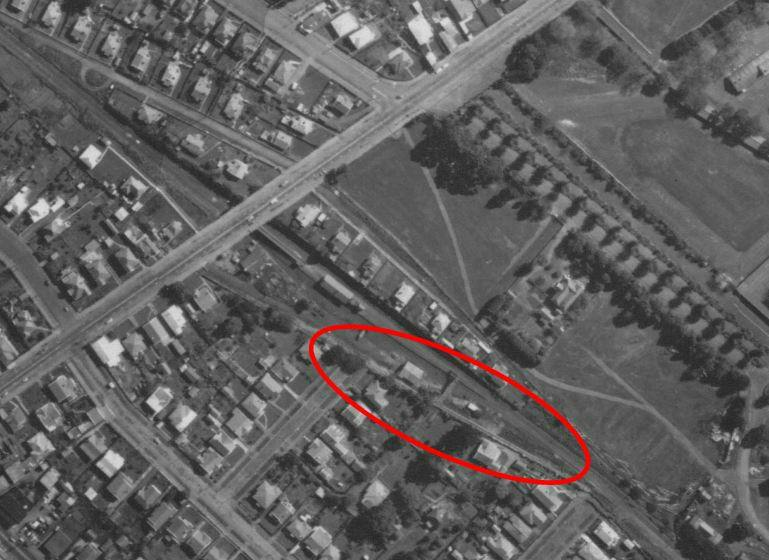
[174.79445085, -36.88949345]
Width 402 m · rotation -0.0°
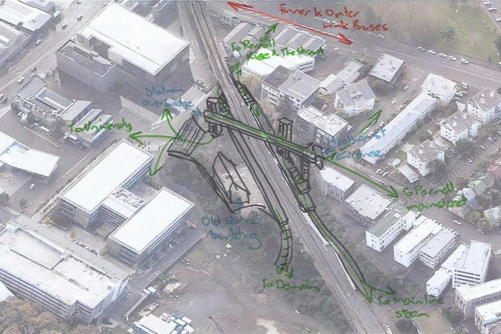
[174.78031345, -36.8539323]
Width 1513 m · rotation -0.0°
[174.83823124999998, -36.913450999999995]
Width 868 m · rotation -0.0°
[174.7197949, -36.7385658]
Width 2391 m · rotation -0.0°
[174.8552434, -36.9884377]
Width 938 m · rotation -0.0°
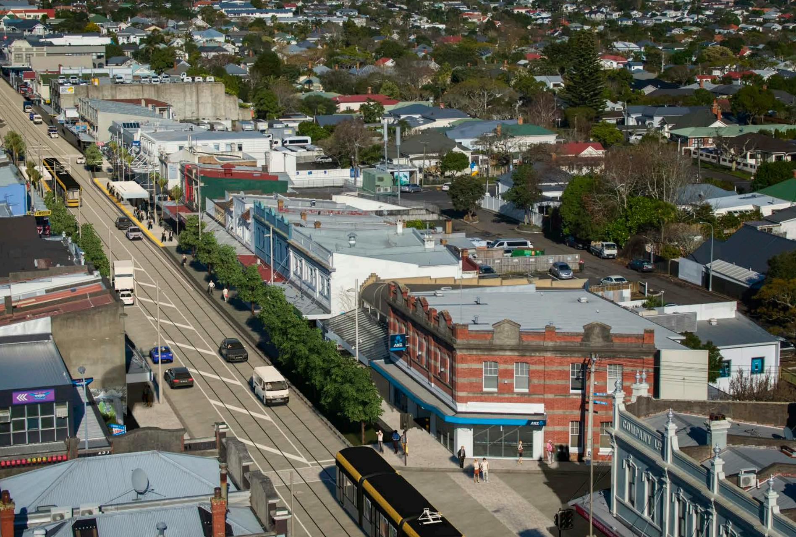
[174.75241799999998, -36.875676999999996]
Width 1247 m · rotation -0.0°
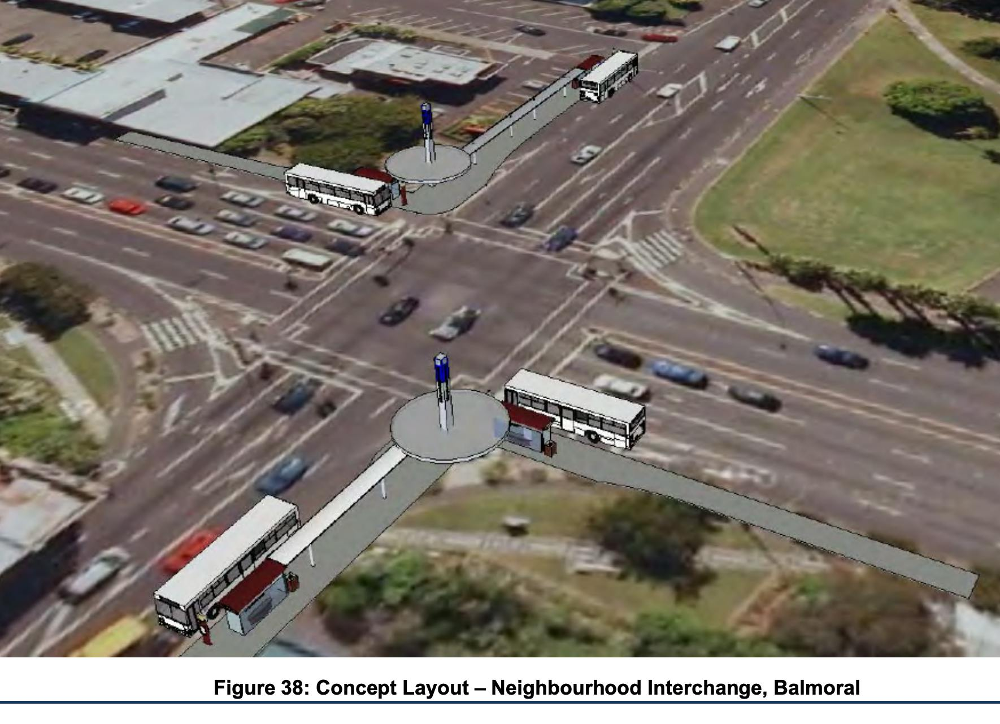
[174.75712755, -36.88661355]
Width 1185 m · rotation -0.0°
[174.87874084999999, -36.993584999999996]
Width 414 m · rotation -0.0°
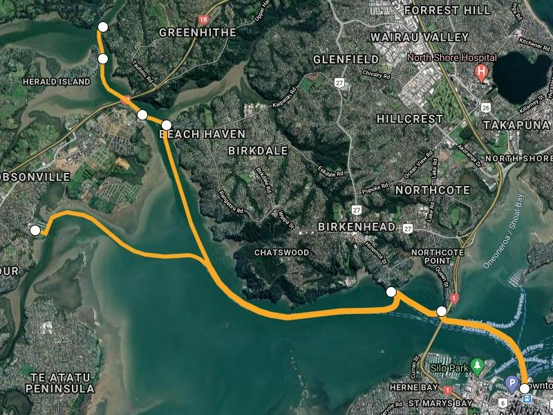
[174.68093485, -36.798705999999996]
Width 2594 m · rotation -0.0°
[174.87769824999998, -36.99126515]
Width 640 m · rotation -0.0°
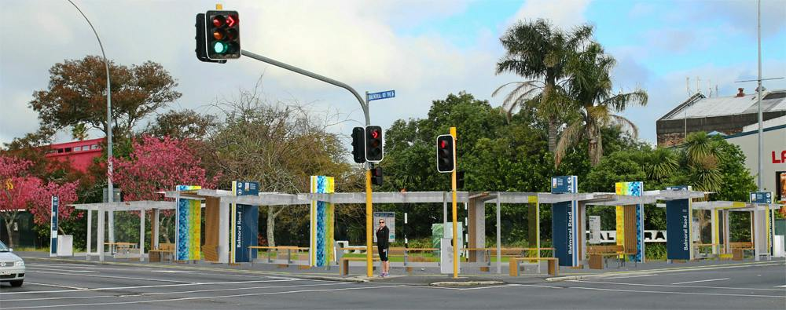
[174.7469084, -36.8866162]
Width 1009 m · rotation -0.0°
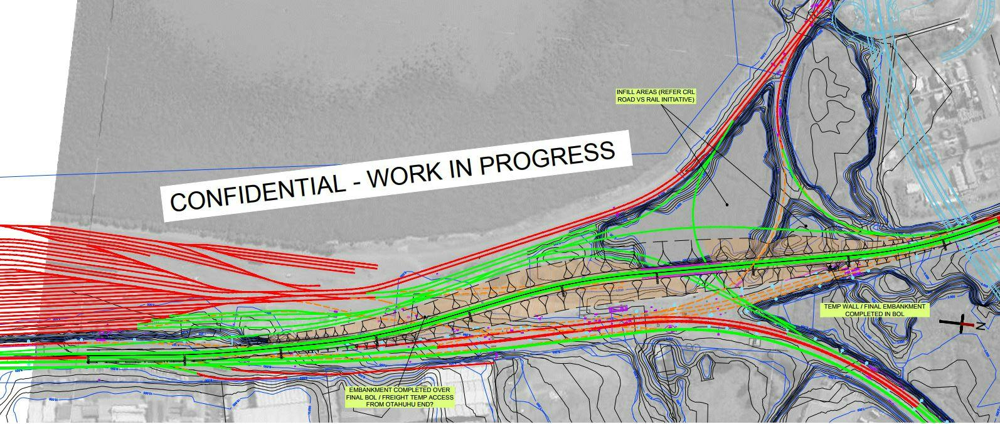
[174.8306393, -36.937310425]
Width 2334 m · rotation -99.6°
[174.73664995000001, -36.76113530000001]
Width 1417 m · rotation -0.0°
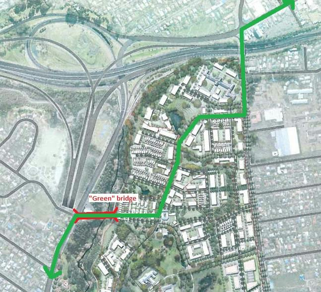
[174.70635049999999, -36.8797133]
Width 1414 m · rotation -0.0°
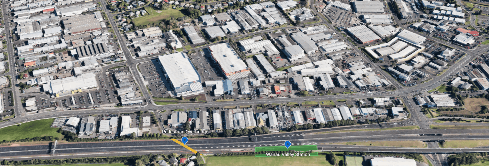
[174.74426465, -36.7748353]
Width 2383 m · rotation -0.0°
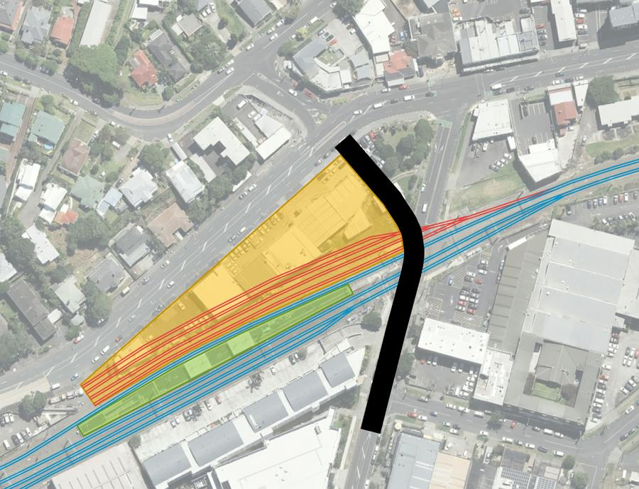
[174.73658740000002, -36.87481185]
Width 905 m · rotation -0.0°
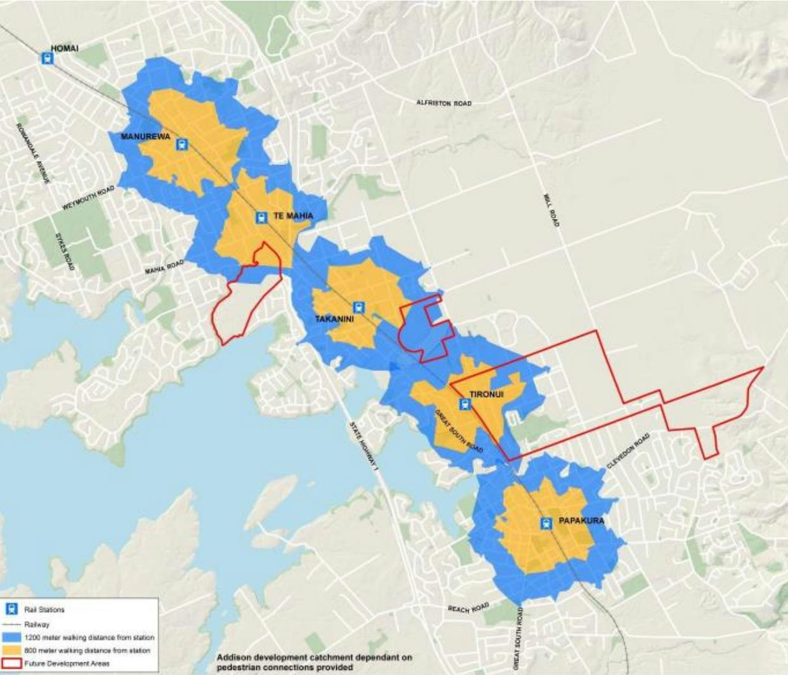
[174.92493805, -37.04424315]
Width 9565 m · rotation -0.3°
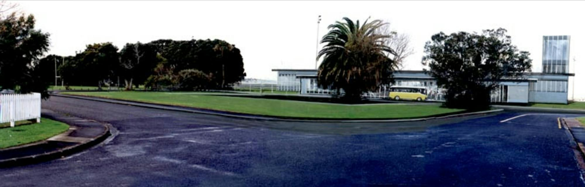
[174.75148145, -36.8164484]
Width 2386 m · rotation -0.0°
[174.76157665, -36.8586899]
Width 1319 m · rotation -0.0°
[174.76395195, -36.8472005]
Width 1494 m · rotation -0.0°
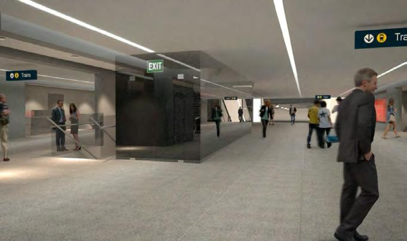
[174.777584, -36.839504649999995]
Width 1531 m · rotation -0.0°
[174.76083154999998, -36.839352250000005]
Width 1461 m · rotation -0.0°